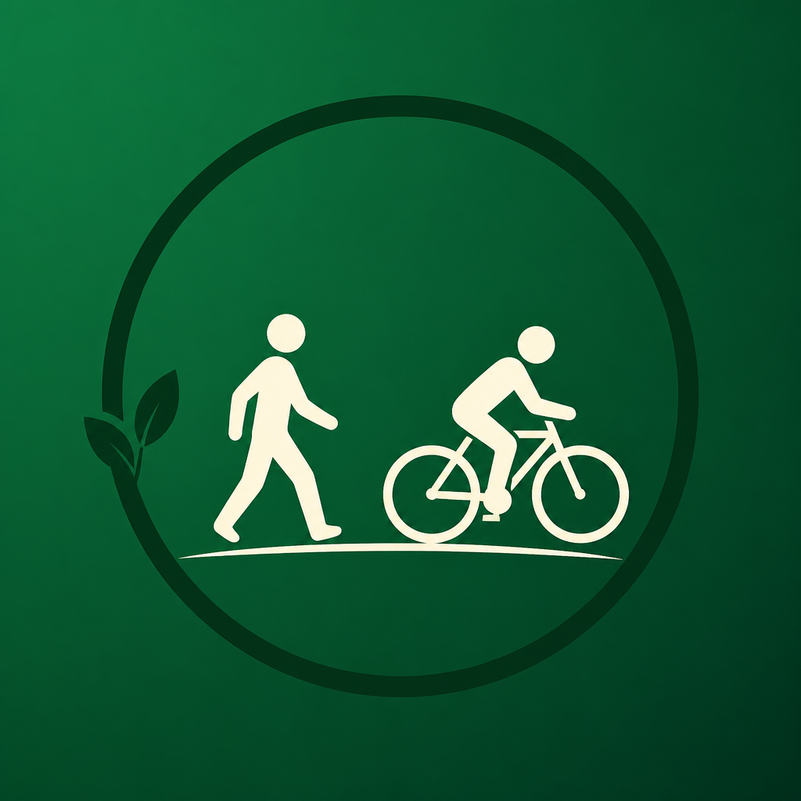

💚 Это вы
Гуляете и катаетесь иногда. Привыкли к Яндексу. Не хотите учить «ещё одно спортивное приложение». Хотите красивую готовую линию и кусок «отсюда — досюда».

Зелёный МаршрутГотовый красивый трек. Старт и финиш — где вам удобно. Дальше ведём в Яндекс.Картах — в навигаторе, которым вы уже пользуетесь.
Для кого
Если у вас нет специальных приложений для прогулок и велокатаний — и вы просто хотите хорошо провести пару часов в городе или рядом — вы наш человек.
Гуляете и катаетесь иногда. Привыкли к Яндексу. Не хотите учить «ещё одно спортивное приложение». Хотите красивую готовую линию и кусок «отсюда — досюда».
Тренировочные планы, сегменты на рекорд, ультра и соцсеть километров. Для этого уже есть Strava и компания — мы про другое.
Сценарий
Без построения «с нуля». Без спортивного жаргона. Только приятный маршрут.
Сильные стороны
Конкурентное преимущество — не «ещё одна карта», а привычный способ ехать по уже приятной линии.
Не тащите себя к «нулевому километру» чужого GPX. Встали у кольца — пошли свой кусок.
Маршрут собираем мы. Ведёте себя в Яндексе — без курса «как пользоваться Komoot».
ЗКМ и треки Подмосковья уже в карусели. Не пустая карта «нарисуй сам».
Выходной и вечер после работы. Не «сезон в Альпах» и не подготовка к гонке.
8 км после работы важнее, чем загрузить весь трек на 70. Режем под ваш день.
Нет обязательной ленты, пульса и рейтингов. Можно просто быть на воздухе.
Честное сравнение
Между «просто Яндекс по улицам» и «тяжёлыми outdoor-приложениями».
| Зелёный Маршрут | Яндекс / 2ГИС сами | Komoot / Outdooractive | Strava | |
|---|---|---|---|---|
| Сценарий | Приятный кусок готового трека | А → Б по дорогам | Подготовка outdoor-маршрута | Тренировка и соцсеть |
| Для кого | Casual, без спец. приложений | Все | Активный outdoor | Атлеты |
| Старт «где стою» на красивой линии | Ядро продукта | Линия сама не «зелёная» | Надо уметь | Не про это |
| Привычный РФ-навигатор | Яндекс кусками | Это и есть навигатор | Свой UI / экспорт | Свой UI |
| Учить новый «спортивный мир» | Не нужно | Не нужно | Часто нужно | Часто нужно |
iOS · Android · готовые треки Москвы и Подмосковья. Код открыт — продукт для людей, а не для «профи с GPX-редактором».